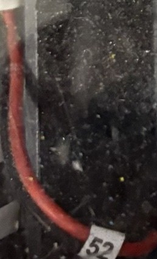
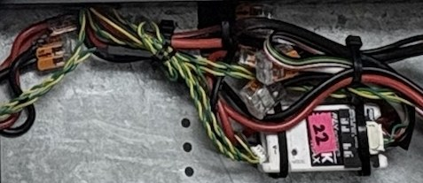
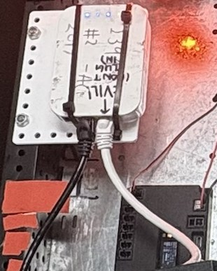
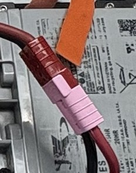
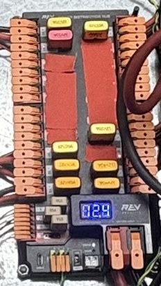
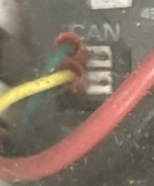

FRC, Simplified
A plain-language guide to the FIRST Robotics Competition.
What is FRC?
The FIRST Robotics Competition (FRC) is a high school robot sport. Teams of students design, build, and program big robots, then compete with them.
The short version
Every January, FRC releases a new game. Every team gets the same starter kit of parts. Teams have about six weeks to design and build a robot that can play that game, then they compete at events around the world.
Who takes part?
FRC is for students in grades 9 to 12, usually ages 14 to 18. Each team has students who do most of the work, plus adult mentors who guide them. Mentors teach, but students make the decisions.
The life of a season
What is the Kit of Parts?
At kickoff, every team receives the same box of parts: motors, wheels, electronics, and building materials. Everyone starts from the same place, so the winning robot comes from smart design and good teamwork, not from having the biggest budget.
Core values
Getting Started: Team, Roles, and Mentors
FRC is run by students, with adults who coach, screen, and support them. This section covers who is on a team, what each person does, when to start, and where to find the official details.
Who is on a team
Anyone can join FRC, whatever their technical experience. A team has three kinds of people:
- Students: the center of every team. Many teams run like a small business, with engineering and business roles. On competition day, a drive team and a drive coach apply the strategy during each match, and an awards and publicity team tells the team's story.
- Lead Coaches: FIRST teams require two adult lead coaches. They can be parents, teachers, professional engineers, or retirees. They have the authority to make team leadership decisions.
- Mentors: every adult on a team is a mentor, because they lead through guidance and example. A technical background is helpful, but not necessary.
What a team needs to compete
- Two adult lead coaches, both screened through FIRST's Youth Protection Screening. Check the Mentor Guide for the current screening rules for other adults.
- A team profile and season registration in the FIRST Dashboard.
- A roster of students and adults, submitted with the registration.
- A place to meet and build, and a budget for registration, parts, and travel.
How to get started
- Create a FIRST account, or log in if you already have one.
- Create a team profile from the "My Teams" tab, and choose FIRST Robotics Competition.
- Build your roster and complete screening for the lead coaches.
- Register for the season through the Dashboard's storefront. Have any sales tax exemption certificate ready.
- Choose your Kickoff and events, then begin meeting and planning the season.
Costs
Season costs are covered in the Costs, Funding, and Travel section, which comes next. Registration is the largest single cost.
When to start
The season follows a yearly cycle. Start in the fall so the team is ready when the new game is revealed.
| When | What happens |
|---|---|
| September and October | Teams that took a break start meeting again. Create or update the team profile, and begin event selection. |
| Before November 17 (noon Eastern) | Each team selects its Kickoff and Kit of Parts option for the next season, according to the FIRST calendar. Check the calendar for the current year, because this date changes each season. |
| December | Kickoff Kit shipments begin once the registration fee is paid. Some teams hold a mock Kickoff to prepare. |
| January | Kickoff. The new game is revealed and build season begins. |
| February to April | Regional and district competitions. Teams that advance go on to the championship. |
| April | FIRST Championship. |
| Summer and fall | Off-season events, fundraising, and preparation for next year. |
Where to get information
- The FIRST Dashboard: your team profile, registration, screening, and event and Kickoff choices.
- The FIRST Robotics Competition Mentor Guide: best practices for running a team. FIRST recommends it for all mentors, new and experienced.
- Mentor training: the Mentor Ready Training Path introduces mentors to the team, and Role of a Lead Coach covers the lead coach job.
- The FIRST Calendar: exact deadlines for each season.
- Rules and expectations: FIRST's event experience page is the authority on what is expected at events.
- Local leaders and nearby teams: people in your region can answer questions about events and local support.
Dates and requirements come from FIRST's website and Mentor Guide. They change each season, so check the FIRST Calendar and the Dashboard for the current details.
Costs, Funding, and Travel
A season costs real money, and the money comes from several places. This section shows what a team pays for, who receives the money, where teams find funding, and what changes when the competition is in another city.
What the season costs
The biggest single cost is the season registration, which is paid to FIRST. Everything else is paid by the team. The table lists the main items.
| Item | What it covers | Paid to |
|---|---|---|
| Season registration | Team number, Kit of Parts, Kickoff Kit, Virtual Kit, FIRST Choice credits, and one regional or two district events. The 2025 to 2026 fee for U.S. and Canadian teams was $6,300. | FIRST |
| Additional events | Extra regional or district events beyond the registration. For the 2026 season, additional in-district or inter-district events cost $1,000 each. | FIRST |
| Championship and other qualifying events | Teams that qualify for championship-level events pay an additional fee. | FIRST |
| Shipping, duties, and taxes | The registration fee does not cover shipping of the Kit of Parts, duties, or taxes. Shipping of the Kickoff Kit to the team is also extra. | Carrier or customs |
| Parts, stock, and tools | Materials for robot parts, the tools used to build the robot, and spare parts. | Vendors |
| Travel | Transport of the robot and team, lodging, and meals for events held out of town. | Transport, hotels, and food providers |
| Apparel and outreach | Team shirts, a robot cart, presentation materials, and outreach events. Optional, but common. | Vendors |
In total, many teams spend between about $17,400 and $56,300 a season, depending on where they are located. A team that expects to qualify for district or championship events should budget for those fees too.
Who pays, and how the money flows
Teams usually pay with more than one source. Money comes in from students, sponsors, grants, and fundraising, and goes out to FIRST, to parts and tools, and to travel.
One team's example, from its own financial page, shows the mix. About two-thirds of its costs came from fees charged to each student, and the rest came from sponsors and fundraising. Its per-student fee was $250 a year, which covered the first competition and a team uniform.
Where teams find funding
- Team fees from students and families. Common, but it can be a barrier for some families. Many teams use fundraising to help students who cannot pay.
- Sponsors. Local businesses and organizations often support a team every year. One team reported that a local bank had paid its registration fee every year since the team started.
- Grants. FIRST and partner organizations offer team grants, and some grants pay for the first regional or district registration. Grants usually do not cover local events, travel, or team apparel. Check the team grants page for current programs and deadlines.
- Grant funds in the Storefront. Where a team has a grant, it can use the funds in the FIRST Storefront for registration and event fees.
- Fundraisers. Events, sales, and donation drives. Good fundraising also builds relationships that bring sponsors back.
Competing in another city
Regional and district events have the same registration and event fees wherever they are. What changes is the travel. Going to a city far away adds transport, lodging, and food for the team, and the robot and spare parts must be moved too.
- Who pays: the team pays for travel. Grants usually do not cover it, so teams plan for it with fees, sponsors, and fundraising.
- How big the crew is: more people means more cost. One team reported its travel costs for 20 people, plus tools and spare parts, on top of registration.
- What to plan: transport for the robot and spares, lodging and meals for students and mentors, and any event fee changes.
- Early planning: booking transport and lodging early usually costs less, and it leaves more time to raise the money.
How to plan the budget
- Start with the official budget template. FIRST publishes a budget template and a page of median team budgets to compare against.
- List the fixed costs first. Registration, events, and shipping are known early.
- Add the variable costs. Parts, tools, and travel depend on the build and the event schedule.
- Plan the funding to match. Decide which sponsors, grants, fees, and fundraisers will cover each line.
- Keep a margin. Unexpected parts, repairs, and travel costs are common.
Prices and grant programs change each season. The figures here are from FIRST's published information and team pages, and the 2025 to 2026 registration fee is shown as an example. Check the FIRST Cost and Registration page for the current season's prices.
What is the Game?
Each year's "game" is the challenge the robots must solve. It is a sports-style contest with a new theme every season.
The basic idea
Two alliances compete in each match. Each alliance has three robots, so six robots are on the field at once. The alliance with more points wins.
Example: the 2026 game, REBUILT
In 2026, alliances scored fuel (yellow balls) into their hub, crossed obstacles, and climbed a tower at the end of the match.
How a match flows
A match has three parts. Think of it like a sports game with a quick warm-up.
- Autonomous: The first 20 seconds. Robots run pre-programmed code. No one is driving.
- Driver control: The main part of the match. Drivers and human players control the robots.
- Endgame: The last 30 seconds. Robots try for final bonus points, like climbing.
How points work
Teams earn points by completing tasks in the game, such as scoring game pieces or climbing. Some tasks are worth more points during autonomous. Teams also earn ranking points for winning matches and for meeting bonus goals. Ranking points decide who advances in qualification events.
Key words
How the Robot Changes
Every year teams build a new robot. Some parts stay the same, and the parts that do the game's work change.
Same base, different tool
Think of the robot as a base that drives around, plus a tool on top that does the game's job. The base stays similar from year to year. The tool changes with the game.
What stays the same
The starting point and the rules rarely change. Each team uses the same kit, builds within the same time frame, and follows the same safety and inspection rules. Bumpers still show the alliance color.
What changes
The game decides the job. A new game means new game pieces, new field parts, and new point goals, so the robot needs a different tool. The season theme and the control system can change too.
Same vs. different at a glance
The control system change
The control system is the robot's brain and wiring. It was roboRIO-based through 2026. For 2027, every team must use the new SystemCore controller.
Robot Parts
A robot is a team of parts working together. Here is a real robot, then the electronics labeled, and finally a layer-by-layer look at real parts.
A real robot

The robot and its electronics, labeled
This drawing leaves out the mechanism, since that changes every year. It shows the parts that most robots share.
What each part does
Break it open
Lift the robot apart, layer by layer. Each layer has a job, and the photos show what the real parts look like.
1. Mechanism
Changes every year. Arm, shooter, or climber.
This is the part that does the game task. Because it changes with each game, there is no single photo. Look at the example robots in "How the Robot Changes."
2. Electronics
The brain, the power splitter, and the links to the outside world.


3. Battery
Powers everything on the robot.

4. Motor controllers and motors
They take power from the hub and turn it into motion.


5. Pneumatics (optional)
Air-powered parts, used by some robots.

6. Frame, bumpers, and wheels
The body that holds everything together and drives.
The frame is the metal skeleton. Bumpers are padded guards that show the alliance color. Wheels and drive motors move the robot. Teams build these from the kit and their own parts, so see the labeled drawing above for how they fit together.
Wiring: how power and signals travel
Wires do two jobs. Power wires carry the battery's energy to every part. Signal wires carry messages between the controller and the motors and sensors. This diagram shows the main connections on a typical robot.
Types of wire
Robots use a few kinds of wire, each for a different job. These are real photos from our robot.



Wire connectors
Connectors let a team unplug parts for repair and keep wires neat. These are real connectors from our robot. Check the manual for your controller and each part to confirm the exact connector.



The rest of the connectors are listed below.
How two wires connect
Most connections follow the same pattern: strip the wire, insert it into a terminal or pin, then join the two halves of the connector until the latch clicks.
Labeling wires
A robot with no labels is hard to fix in a hurry. Good labels turn a tangle into a plan.
- Label both ends of every wire and cable, so you can trace it from either side.
- Use a number system that matches a wiring diagram. The photos show numbered wire flags, such as 20, 46, 70, 71, 83, and 52, on the cables.
- Make labels readable after the robot is closed up. Put them where you can see them without moving the robot apart. Heat-shrink tags and printed flags last longer than marker.
- Use color with a purpose. Red for +power, black for ground, and a yellow and green twisted pair for CAN. Keep the same colors in the diagram.
- Keep the diagram current. Update it whenever a wire changes, and keep it in the team notebook.
Other parts you will also find
The earlier lists leave out these parts. They are common on robots, and a real robot needs most of them.
Part photos are from the WPILib documentation (docs.wpilib.org), which shows manufacturer product images. Check each image's license before reusing it outside this page.
Software and Controls
The hardware does nothing on its own. Software reads what the driver wants and what the sensors see, decides what each motor should do, and sends those commands over the wires from the last section.
The big picture
Commands start at the driver's laptop and end at the motors. Sensor readings flow back the other way, so the code can check its work.
What goes in
Several programs and libraries work together. Each one has a single job.
How it works
- Input. The driver moves a joystick or presses a button. The Driver Station sends that input to the robot over the radio, many times a second.
- Read. The robot code reads the input and the sensors. Encoders count wheel turns, and a gyro measures how the robot is turning.
- Decide. The code works out what each motor should do. The main loop repeats about every 20 milliseconds, so the robot responds quickly.
- Command. The code sends each motor controller its command over the CAN bus, addressed by device ID. The motor controller turns that command into power from the power hub.
- Feedback. Sensors report back, and the loop starts again. The power hub also reports current, which helps spot a stuck or overloaded motor.
- Safety. When the robot is disabled, the code stops commanding the motors. The signal light shows whether the robot is enabled.
Example: driving one wheel
Here is one path, step by step. The device ID is an example.
- The driver pushes the joystick forward.
- The robot code turns that push into a speed for the drive motor on one swerve module, which is device ID 5.
- The code sends that speed to motor controller 5 over the CAN bus.
- The wheel turns. Its encoder reports how far it has turned, and the code checks that the speed matches the request.
Tools for coding, debugging, and testing
Teams use a few tools at each stage. Most are free.
| Stage | Tool | What it does | Language |
|---|---|---|---|
| Coding | VS Code with the WPILib extension | The editor for writing and building robot code. | Java, Python |
| Coding | Gradle | Builds the Java code and downloads the libraries it needs. | Java |
| Coding | RobotPy | Runs Python code on the controller. | Python |
| Coding | Git and GitHub | Saves every version of the code and shares it with the team. | Both |
| Debugging | Driver Station console | Shows messages and errors from the robot while it runs. | Both |
| Debugging | Print statements | Print a value to see what the code is doing. | Python: print. Java: System.out.println |
| Debugging | AdvantageScope | Opens the robot's log files and graphs values over time. | Both |
| Debugging | Shuffleboard | A live dashboard that shows robot values as they change. | Both |
| Testing | WPILib simulator | Runs the code on a laptop with virtual parts, before the robot is built. | Both |
| Testing | Unit tests | Automatic checks for one piece of code. | Java: JUnit. Python: pytest with pyfrc |
| Testing | Bench testing | Test the real robot with the wheels off the floor, one motor at a time, at low speed. | Hands-on |
Try a scenario
Pick a scenario and a language. Each comment explains one line of code. Scenarios 1 and 2 are simple. Scenarios 3 to 5 are complex.
Testing without the robot
WPILib includes a simulator, so students can run robot code on a laptop, watch virtual parts move, and find bugs before the robot is built. Teams still test on the real robot, because a simulator can't copy every detail.
Keep the code under version control
Store the code and device settings in Git. That gives the team a record of what changed, when, and by whom. It's the same kind of record as the repository you're reading.
Frameworks and repositories you can start from
A framework is ready-made code that handles a hard job, such as driving a swerve base or logging a match, so the team can focus on its own game task. Most of these come with an example project or template. Start from that, change a few settings, and write new code only where the robot needs something different. Check each project's current release and license, and confirm the version matches your season's software with a mentor.
| Framework | Language | What it does | Little customization needed | Where to look |
|---|---|---|---|---|
| YAGSL (Yet Another Swerve Library) | Java | Runs a swerve drive from a config file that describes each module. | Edit the JSON module settings for your robot, and start from the example project. | library, docs, example project, config generator |
| PhotonVision | Web interface; Java, C++, and Python libraries | Vision software for robot cameras, including AprilTag detection. It runs on a separate coprocessor, not the roboRIO. | Set up cameras and detection in its web interface before writing any code. | repository, docs |
| AdvantageKit | Java | Logging and replay framework from Team 6328. It records inputs and outputs so a match can be replayed later. | Moderate. Wrap each hardware device in an IO class, following the examples. | repository, docs |
| AdvantageScope | Desktop app (no code) | Opens robot log files and graphs the signals inside them. Used with AdvantageKit logs. | None. Open a log file and pick the signals to graph. | repository |
| PathPlanner | Java (paths drawn in a desktop app) | Draws autonomous paths on a field picture and follows them with the robot's drive code. | Low. Draw paths in the app, then add the library and call the path from the code. | repository, docs |
| RobotPy and pyfrc | Python | Lets teams write robot code in Python. pyfrc adds a simulator for testing on a laptop. | Low. Start from the template project, then edit the robot class. | RobotPy, docs, pyfrc repository |
| WPILib | Java, C++, Python | The official robot framework and toolchain. Its examples appear in the New Project wizard in VS Code. | Low. Pick the example closest to your robot and build from it. | repository, docs |
Each link was found through a web search, and the pages themselves were not opened and read in full. Visit the project before you rely on it.
CAD and Mechanical
Every robot part starts as a model on a computer. This section follows a part from CAD design to a physical piece, then to a robot.
The frame: the robot's skeleton
The frame is the robot's skeleton. It holds every part, and it has to be light, stiff, and tough enough to survive a match.
Is the frame the same every game?
The base is mostly the same from year to year. Teams often reuse a drive base design or the kit drive base. The game changes the upper structure: where mechanisms mount, how tall the robot needs to be, and how the frame must stay inside the rules.
Common frame types
Box tube frame
Square aluminum tubes joined with brackets. Strong, simple, and the most common type.
Bent sheet metal frame
A flat sheet is cut, folded into channels, and riveted or bolted together. Light and quick to make.
Extrusion frame
Pre-made profiles with slots. Easy to adjust and rebuild, great for prototypes, but heavier for the same strength.
Drive base (kit or custom)
A chassis that holds the motors and wheels. Some designs keep wheels inside the frame; "West Coast" designs put them outside.
What materials are used?
How a frame is designed
- Set the goals: size, weight, and what the game needs the robot to reach.
- Draw it in CAD: sketch the flat outline first, then extrude it into 3D. Design one side of a symmetric drive base and mirror it.
- Check the rules: the frame must be fixed (no moving parts in the frame perimeter) and fit inside the bumper zone. Weight limits apply too. The 2026 limit was 115 lb, not counting bumpers and battery. Check the current manual.
- Plan clearance: on a flat floor, only the wheels should touch the carpet.
- Keep the weight low and centered: heavy parts like motors and batteries go low so the robot stays balanced.
- Make the drive base stiff: the drivetrain should flex the least of anything on the robot, so it holds its shape under impacts.
The frame and the bumper zone
The frame sits inside the bumper zone. The bumpers cover the outside of that zone, so the frame is what the rules measure.
From raw stock to a usable part
A frame part starts as plain material. Here is the path, step by step.
- Raw stock: Teams buy aluminum as sheets, plates, or tube. Tube often comes in 47-inch lengths.
- Cut: CNC routers, mills, waterjets, and laser cutters cut the shapes from CAD files. Hand saws work for rough cuts, but they are less accurate.
- Bend: A hand brake or CNC press brake folds sheet metal. Softer alloys like 3003 or 5052 bend better than 6061, which can crack.
- Drill and mill: Holes and pockets are added. Some tubing comes with bolt holes already punched.
- Assemble: Parts are bolted, riveted, or joined with brackets and gussets.
- Inspect: Measure the frame perimeter, weigh the robot, and check it against the inspection checklist before the event.
CAD: designing before cutting
Almost every part starts as a 3D model in CAD software. Many teams use Onshape, a cloud-based tool where the whole team can work on one model at the same time. Others use Inventor or SolidWorks. Designers sketch a flat outline, extrude it into 3D, then add holes, bends, and mounting points.
From CAD to a physical part
The CAD model is turned into instructions that machines can follow.
- CAD model: the part is drawn in 3D with its exact size and holes.
- Flat pattern (sheet metal): the part is unfolded into a flat shape and exported, often as a DXF file, for cutting.
- CAM toolpath: CAM software turns the shape into the path a CNC machine follows. Some teams convert CAD files into G-code this way.
- Setup: the stock is clamped flat on the machine, and the right cutting tools are loaded.
- Cut and machine: a CNC router, mill, waterjet, or laser cuts the outline, and the mill adds pockets and holes.
- Bend: a brake folds sheet metal along the bend lines. Bends are less precise than cuts, so designers leave a little room for variation.
- Check fit: measure holes and bends against the drawing. If something is off, fix the CAD and make the part again.
Assembly: putting the robot together
In CAD, parts are locked together with "mates," such as a fastened mate for bolts or a cylindrical mate for a shaft in a hole. On the real robot, the same parts are joined with bolts, rivets, brackets, and standoffs. Teams usually build in this order:
- Frame first: square it up and check its fit against the CAD.
- Drivetrain next: add the gearboxes, motors, and wheels.
- Mechanisms: mount the arms, shooters, or climbers to the frame.
- Electronics last: install the battery and controller, then route and label the wires.
Interactive: take the robot apart in 3D
Drag the model to rotate it and see every side, or pick a preset view. Click a part in the model or the list to select it. Remove it to see what it was covering, then add it back.
Demo colors: each part has its own bright color so you can tell them apart. The actual colors are grey or black.
Select a part to see what it does.
A simplified model based on the layout of a real swerve robot shown in our photos and video. Sizes are approximate. Colors are for demo purposes only; actual colors are grey or black.
Real robot CAD to explore
Some teams publish their robot CAD so you can open the models and see how the parts fit. These pages link to public models:
- Red Hawk Robotics (Team 2713), 2023 robot "Rainbow Dash": Onshape blog post
- Team SCREAM, robot AXL: Onshape blog post
- Spectre, 2025 FIRST World Championship robot: Onshape blog post
Photos of these CAD models and built robots are not embedded yet. The source pages didn't expose image files I could verify from here.
Media and Marketing
Media and marketing is how a team tells its story to the people who can help it: sponsors who pay for parts, judges who score its awards, families and schools who cheer it on, and students who might join next year. A great robot that nobody hears about gets less support. A team that shares its work clearly gets more.
What it is
It covers everything a team shares about itself: photos and video of the build, social media posts, a team website, sponsor thank-you posts, and the written record of the season. It also covers the team's story itself, which is the reason people care about the robot in the first place.
Why it matters
- Funding: sponsors want to see what their money does. Clear photos, results, and thank-you posts show them.
- Judged awards: FIRST has awards based on team attributes, including recruiting students into engineering and STEM, fundraising, and community outreach. Judges talk with teams in the pit about their outreach efforts.
- Documentation: the Impact Award, FIRST's highest honor, values a team's record of its own experience. Keeping that record is part of the work, not an extra.
- Recruiting: a visible team draws the students and mentors who will run it next year.
- Gracious Professionalism: sharing your team's work openly and crediting others is part of the FIRST ethic, both on and off the field.
A simple strategy
- Pick the story. Choose one or two things worth telling, such as a problem the team solved, a new student who grew, or a community project.
- Capture as you go. Assign one student to photos and video from the first day of build. Collect moments, not just final shots.
- Plan a calendar. Match posts to the season: kickoff, build weeks, the first event, and the championship. Keep a steady rhythm rather than posting in bursts.
- Say thank you, and show results. Post about each sponsor and what their support made possible. Share event results and what the team learned.
- Keep a season record. Save photos, notes, and outreach numbers in one place. This makes awards submissions and next year's planning much easier.
Approach by audience
Each audience wants something different. Write for the one you are reaching.
| Audience | What they want to know | Content that works |
|---|---|---|
| Sponsors | What their support made possible, and whether it is well used | Build photos, results, a thank-you post with a short summary |
| Judges | What the team did, how it did it, and what it gained from it | A clear season record, outreach numbers, and a team who can talk about it |
| Families and school | What their student is learning and doing | Event photos, short updates, and a calendar of upcoming events |
| Future students | Whether they would fit in, and what they would do | Short videos of students at work, and clear "how to join" information |
| Community | What the team gives back | Outreach events, demonstrations, and local stories |
Rules and good habits
- Get permission before you post a person's photo or name, and take extra care with younger students.
- Credit others when you use their work, and check that sponsor logos are used the way the sponsor allows.
- Check the season rules for anything about team names, logos, or sharing, and ask a mentor when unsure.
- Keep the record accurate. Post numbers you can back up, such as outreach counts and results.
Award descriptions are from FIRST's awards pages. Check the current season's awards page for the latest wording before you write for it.